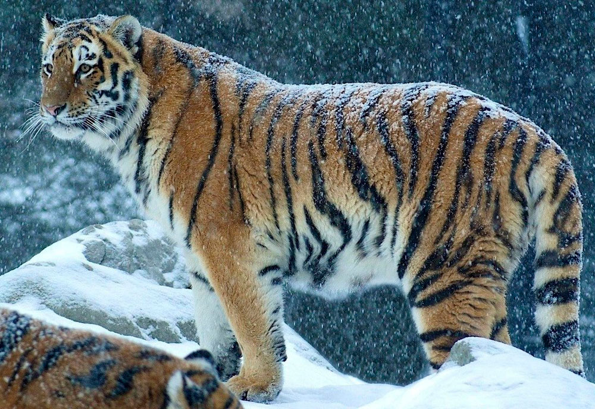

Амурский тигр
Распространение
Ареал этого тигра сосредоточен в охраняемой зоне на юго-востоке России, по берегам рек Амур и Уссури в Амурской области, Хабаровском и Приморском краях. Более всего амурские тигры распространены в предгорьях Сихотэ-Алинь в Лазовском районе Приморского края, где на сравнительно небольшой территории живёт каждый шестой дикий амурский тигр (2003). Предполагается расселить амурских тигров на территории Плейстоценового парка в Якутии. По сведению российских зоологов, есть информация, что небольшая группа амурских тигров может обитать в северной части КНДР[14]. Количество северокорейских тигров оценивают в 20 особей[15]. По состоянию на 2022 год, "амурский тигр начал расширять ареал обитания, переходя и на территорию Китая, где жил раньше" - рассказал начальник постоянно действующей экспедиции РАН Вячеслав Рожнов.

Численность
В дикой природе
В конце XIX века ежегодно добывали до 100 зверей, а в 1912 году — около 60 особей. Поголовье хищника сокращалось примерно до 1940 года, когда, предположительно, осталось лишь 30—40 особей. В 1958—1959 годах было учтено около 100 особей (65 в Приморском и 35 в Хабаровском крае), в 1964 году — 120, в 1968 году — 140, в 1970—150, в 1978—200, из них 8—10 особей в Сихотэ-Алинском заповеднике и около 15 взрослых тигров в Лазовском заповеднике[16]. Всего в России на 1996 год насчитывалось около 415—476 особей. Около 10 % (30 особей) популяции амурского тигра обитает в Китае (в Маньчжурии)[источник не указан 2363 дня].
По данным единовременного учёта 2005 года, численность амурского тигра на юге Дальнего Востока России составляла 423—502 особи[17] (или 334—417 взрослых особей тигра и 97-112 тигрят[18]). В апреле 2013 года численность тигров на Дальнем Востоке оценивалась в 450 особей[19]. А по данным тигриной переписи 2015 года, на Российском Дальнем Востоке обитает 523—540 амурских тигров[20]. Это и не много, и не мало. Это ровно столько, сколько вмещают в себя участки уссурийской тайги. Есть планы — расселить тигра в пределах его исторического ареала, то есть возвратить в те места, где он когда-то обитал, но потом был истреблён. Таким образом, численность тигров может вырасти до 750. Однако это возможно лишь за счёт интенсивного увеличения поголовья копытных, составляющих основу рациона тигров[21]. На начало 2022 года, по словам Заместителя директора Института проблем экологии и эволюции им. А. Северцова Российской академии науки начальника постоянно действующей экспедиции РАН Вячеслава Рожнова, амурские тигры уже не находятся в критическом положении; на территории России постоянно находятся порядка 600 особей.
Описание
Амурский тигр относится к наиболее крупным подвидам. Шерсть гуще, чем у тигров, живущих в тёплых районах, а его окрас светлее. Основной окрас шерсти в зимнее время — оранжевый, а живот белый.
Это единственный подвид тигра, представители которого имеют на брюхе пятисантиметровый слой жира, защищающий от леденящего ветра при крайне низких температурах. Тело вытянутое, гибкое, голова округлая, лапы недлинные, хвост длинный. Уши очень короткие, так как он обитает в холодной местности. Амурский тигр различает цвета. Ночью он видит в пять раз лучше, чем человек.
В природе тигр доживает до 15 лет, в неволе чуть более 20 лет.
Размеры и масса
Средний весовой диапазон амурских тигров составляет 180—306 кг для самцов и 100—167 кг для самок. Общая длина самцов при этом составляет 270—330 см, а самок — 240—275 см. Длина черепа самцов варьируется от 34,1 до 38,3 см, а самок — от 27,9 до 31,8 см[22]. В 2005 году группа российских, американских и индийских зоологов опубликовала анализ исторических и современных данных о массе тела диких и содержащихся в неволе амурских тигров, как самцов, так и самок. Результаты этого анализа показывают, что исторически средняя масса самцов амурских тигров в дикой природе составляла 215,3 кг, а самок − 155,5 кг, в то время как в наши дни средняя масса самцов составляет около 176,4 кг, а самок — 117,9 кг[23]. Самые крупные самцы, носящие радиоошейник, в настоящее время весят 212 кг[24] и 225 кг.[25]
Амурский тигр традиционно считается крупнейшим ныне живущим представителем семейства кошачьих, но бенгальские тигры в настоящее время могут быть значительно крупнее, данные о крупных представителях тигров из этой популяции недостаточно достоверны. Самым крупным самцом амурского тигра для которого существуют достоверные данные, по всей видимости был 254 кг самец, взвешенный в 1911 году. Однако, в литературе встречаются малонадежные данные о тиграх массой до 390 кг[23].